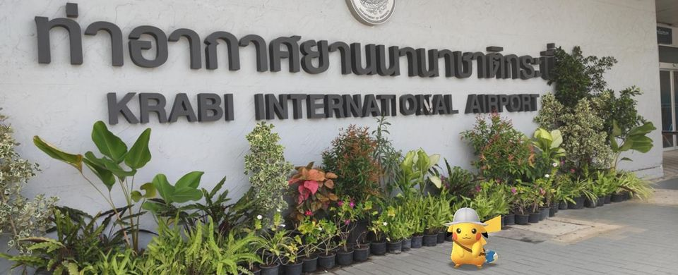

ไปเที่ยวเมืองกระบี่ ช่วงโควิด-19 ระบาด (ทัวร์กินไม่เน้นทะเล)

หลังจากที่มีการปลด Lock down กรุงเทพและหลายจังหวัดทำให้สามารถไปเที่ยวได้มากขึ้น และ trip เที่ยวกระบี่ที่จองไว้ก่อนโควิดระบายก็อยู่ในช่วงนี้พอดี ตอนแรกก็กังวลว่าจะโดนเลื่อน แต่สุดท้ายก็มีเที่ยวบินไปสักที แต่การไปเที่ยวจำเป็นต้องฉีดวัคซีน+ตรวจโควิด เพื่อให้สามารถเข้าเมืองได้ ก่อนไปเที่ยวเลยต้องเตรียมตัวกันหน่อย จากที่หาข้อมูลแถวบ้านค่าตรวจ ATK แพงเวอร์มาก คือ 500 - 1,000 บาท 🤑 เลยพยายามหาจนเจอราคา 300 บาท 😍
ไปตรวจโควิด-19 แบบ ATK
เงื่อนไขการเข้าจังหวัดกระบี่ที่กำหนดไว้คือ ฉีดวัคซีนครบ 💉💉 และมี 🩺ผลตรวจว่าไม่เป็นโควิด สำหรับเด็กอายุ 12 ปี แค่ตรวจโควิดอย่างเดียว เนื่องจากไปตรวจ 4 คน การขับรถเข้าไปในเมืองถือว่าคุ้มค่าถ้าราคาไม่แพง หาข้อมูลที่สะดวกไปเจอของ ibis ราคาพร้อมใบรับรองแพทย์อยู่ที่ 300 บาท/คน สามารถ walk in เข้าไปได้เลยไม่ต้องจอง (หรือจะจองก็ได้แล้วแต่สะดวก)

สำหรับคนที่สนใจและสะดวกไปแถวถนนรัชดา บริเวณ ห้วยขวาง สุทธิสาร สามารถติดต่อสอบถามรายละเอียดเพิ่มเติมได้ที่  Facebook
Facebook
📍พิกัด: https://g.page/letsrelaxspa-ibis-ratchada?share
เดินทางไปกระบี่ด้วย AirAsia ดอนเมือง
วันที่เดินทางเป็นช่วงที่เพิ่งเริ่มให้บริการหลังจากโดน Lock down ทำให้กระบี่มีเพียง 1 เที่ยวบินต่อวันเท่านั้น แต่เวลาก็ถือว่ายังใช้ได้อยู่
ระหว่างรอขึ้นเครื่องเลยไปหาอะไรกินเพราะยังไม่ได้กินข้าวเช้า เลยแวะ Miracle Lounge แต่ปรากฎว่าเจอข้าวบูด 😱 ต้องเรียกให้พนักงานมาเปลี่ยน กับข้าวก็เจอไก่ผัดขิงก็เริ่มมีกลิ่นไม่ค่อยดี สรุปว่าพอไม่มีลูกค้าก็อุ่นอาหารกันจนลืมเลย ช่วงนี้ใครจะไปใช้บริการก็เช็คอาหารให้ดีก่อนว่ามีปัญหาหรือไม่ ส่วนพนักงานก็ขอโทษอย่างเดียว 🤬
การเดินทางราบรื่นดี แต่ตอนลงไม่ค่อยราบรืนเนื่องจากที่สนามบินกระบี่มีลมแรงมาก ตื่นเต้นเพราะเครื่องโคลงไปโคลงมา กลัวจะหลุดรันเวย์มาก 😅
เมื่อถึงสนามบินก็ไปรับรถเช่าที่จองเอาไว้ มาคราวนี้ใช้ยี่ห้อ AVIS มีโปรประกันชั้น 1 วันละ 6xx บาทเท่านั้น เรียกว่าเรียกลูกค้ากันสุด ๆ เรียกว่าใครเที่ยวช่วงนี้มีแต่โปรโมชั่นแยกลูกค้าเต็มไปหมด 🎉
อาหารมื้อแรก ร้านน้องโจ๊ก
ไปถึงกระบี่ก็บ่าย ๆ แล้ว พอเช่ารถเสร็จก็ไปหาอะไรกินกัน เราเลยตรงไปร้านน้องโจ๊กในเมืองกระบี่ ร้านนี้กินประจำ ชอบที่อาหารอาหารทะเลส่วนใหญ่จะสด แต่บางอย่างเช่นหอยแมลงภู่ ดันเป็นหอยแช่แข็งซะงั้น เรียกว่าสั่งครั้งเดียวพอ เลยกินเฉพาะที่ชอบ รูปที่ลงคือมากิน 2 มือ
ราคาอาหารจะค่อนข้างไปทางสูงหน่อย แต่คุณภาพของวัตถุดิบถือว่าสมเหตุสมผล สามารถสั่งรายละเอียดเผ็ดน้อย แยกน้ำยำ ก็ได้ตามสั่ง อาหารไม่ทำสุกจนเกินไป อย่างหอยแครงก็ลวกมากำลังกิน ปลานึ่งได้พอดีเนื้อชุ่มฉ่ำไม่แข็งกระด้าง ช่วงที่ไปร้านเปิดแค่ชั้น 2 ส่วนด้านหน้าร้านปิดให้บริการ
อาหารที่คราวนี้มากินแล้วไม่ประทับใจเท่าไหร่ 😫 คือ ข้าวผัด และ ทอดมันกุ้ง คงไม่สั่งมากินอีก
📍พิกัด: https://g.page/NongjokeKrabi?share
แวะซื้อขนมที่ตลาดโต้รุ่ง
ในเมืองจะมีตลาดโต้รุ่งที่มีของกินขายหลากหลาย มีทั้งขนม เครื่องดื่ม อาหาร ผลไม้ตามฤดู มาที่เดียวมีครบ ชอบมาแวะเพราะมีขนมที่เป็นของพื้นที่ขาย ส่วนตัวชอบขนมลูกระเบิด เป็นแป้งทอดข้างในมีไส้ คลุกงา ทอดในน้ำมัน โดยเฉพาะไส้มะพร้าวนี้ถ้าคนชอบมัน ๆ หวาน ๆ แนะนำเลย 😍 แป้งที่มีความกรอบและหนึบ ๆ นุ่ม ๆ ในเวลาเดียวกัน
คราวนี้เจอขนมข้าวฟ้างด้วย แปลกดีไม่เคยกิน ใครชอบกินข้าวฟ้างแบบมัน ๆ กะทิ น่าจะชอบ
หากมาตลาดช่วงเช้า 🌞 จะมีเฉพาะร้านอาหาร พวกข้าวราดแกง ถ้ามาช่วงหลังเที่ยงก็จะมีร้านอื่น ๆ มาเปิดมากขึ้น 🌛 เต็มที่คือเย็นจนค่ำมีของเยอะมาก แต่ช่วงโควิดร้านหายไปเยอะ ถามแม่ค้าบอกหลายร้านกลับไปขายของที่บ้าน เนื่องจากตลาดซบเซามากขายไม่ดี 😥
📍พิกัด: https://goo.gl/maps/LGRg9LrJP9JgPiV9A
เข้าพักโรงแรม The Chill
โรงแรมที่จองเอาไว้คราวนี้เป็นโรงแรม ⭐⭐⭐ มีสระว่ายน้ำ ผมจองห้องที่ติดกับสระว่ายน้ำ เดินออกจากห้องไปว่ายน้ำได้เลย
👍ชอบ
- การตกแต่ง ภายในตกแต่งดูทันสมัย เหมาะกับการถ่ายรูปลงโซเชียลมาก มีอุปกรณ์ประกอบฉากเพียบ
- มีที่จอดรถสะดวก
- ที่นอน นอนสบาย ออกไปทางนุ่มหน่อย แต่ก็ไม่ได้ยวบยาบ
- มีจักรยานให้ยืมปั่นเล่นได้
- ห้องไม่แคบจนเกินไป
- ไม่ไกลจากตัวเมืองมาก
👎ไม่ชอบ
- 📶Wi-Fi เหมือนลมพัด ถ้าช่วงเย็นถึงค่ำ จะช้ามากจนใช้งานแทบไม่ได้ เข้าใจว่า Bandwidth เต็มเพราะคนใช้เยอะ 😥
- ผ้าเช็ดตัวเก่า
- หมอนมีกลิ่นอับ แต่แจ้งให้เปลี่ยนก็เอาของเปลี่ยนให้
- มีแมลงสาบ 🪳 วันแรกเจอตัวเป็น ๆ แอบอยู่ที่มุมบานพับประตูห้องน้ำ เรียกพนักงานมาจัดการ มาพร้อมไม้กวาดและที่ตักผง วันสุดท้ายเจอไข่ แม่บ้านแก้ตัวว่ามันชอบขึ้นมาจากท่อระบายน้ำตอนกลางคืน 😱 เข้าใจว่าคงไม่มีทุกห้อง แต่ห้องที่ไปพักดันมี
📍พิกัด: https://goo.gl/maps/Y5ovqBkP95EfAEPf7
ไปดูน้ำใส ๆ ที่ คลองสระแก้ว
คลองน้ำที่ใสจริง ๆ เห็นปลาว่ายกันชัด ๆ มีทางเดินเลาะไปตามลำน้ำ ทางเข้าจะลำบากหน่อยเพราะเป็นทางตัดเข้าไปในสวนยางซึ่งเป็นดินลูกรัง ดังนั้นช่วงไหนฝนตกหนัก ๆ ไม่แนะนำให้ไปเท่าไหร่ และควรทายากันยุงไปด้วยจะดีมาก ช่วงที่มาไม่มีนักท่องเที่ยวเลย หากใครอยากมาเล่นน้ำ หรือล่องเรือควรเผื่อเวลาไว้หลายชั่วโมงหน่อย ผมมีเวลาไปแค่ตอนเย็นเลยได้ไปแค่เดินดู ลุยน้ำเย็น ๆ ดื่มด่ำบรรยากาศ ไม่ได้ลงเล่นน้ำหรือล่องเรือ
ด้านในสามารถเดินไปชมธรรมชาติป่าพลุได้ แต่ต้องมีคนนำทาง
👍ชอบ
- น้ำใสมาก จุดที่ให้เดินเล่นก็มีน้ำ สามารถเดินลุยได้ ถือว่าเป็นประสบการณ์ที่ดี
- มีจุดให้เล่นน้ำ
- สามารถล่องเรือไปดูพืชใต้น้ำสวย ๆ ได้
- สายชอบเดินป่าไม่ควรพลาด
👎ไม่ชอบ
- ราคาค่าบริการค่อนข้างสูง และต้องเผื่อเวลามากหากจะเที่ยวเต็มที่ เพราะใช้เวลาเป็นชั่วโมงในการทัวร์
- ทางเข้าเป็นดินลูกรัง ช่วงนี้ไม่มีนักท่องเที่ยว ตอนขับรถเข้าไปคือเปลี่ยวมาก ไม่มีป้ายบอกทางเท่าไหร่ แต่เข้าใจว่าช่วงปกติคนคงเยอะกว่านี้
📍พิกัด: https://goo.gl/maps/NoX4uRzX4LCGvKa2A
ไปดูพระอาทิตย์ตก 🌅 ที่ Bridge Cafe
จุดไปชมพระอาทิตย์ตกเป็นพื้นที่ของร้านอาหาร หากเข้าไปใช้บริการถ่ายรูปที่สะพานต้องสั่งอาหาร ซึ่งผมสั่งเครื่องดื่มมาคนละแก้ว ไม่ได้ลองอาหารคาว เสียดายวันที่ไปเมฆเยอะไปหน่อย ถ้าไปตอนกลางวันหรือวันที่ฟ้าเปิดแสงจะสวยมาก
👍ชอบ
- มีสะพานให้เดินไปถ่ายรูป
- มีหอคอยสูงประมาณ 10 เมตร ทำให้ถ่ายภาพมุมสูงได้อีก
- บรรยากาศดี แสงสวย
- มีห้องน้ำสะอาดบริการ
👎ไม่ชอบ
- เครื่องดื่มพวกชาเขียวไม่อร่อยเลย ผงชาไม่ละลายน้ำ รสสัมผัสแย่มาก
- รสชาติเครื่องดื่มอื่น ๆ ก็ไม่ค่อยถูกปาก แนะนำสั่งน้ำสำเร็จรูปดีกว่า
- ขนมหวานพอกินได้
📍พิกัด: https://goo.gl/maps/smrrDBsGfxjj5nDP9
ไปกินข้าวเย็นที่ร้าน โกตุง
เป็นร้านอาหารที่เคยอยู่ในตัวเมือง แต่ย้ายออกมานอกเมืองหน่อย ร้านใหญ่ขึ้น รสชาติอาหารยังอร่อยเหมือนเดิม ส่วนใหญ่อาหารรสชาติจัดจ้าน ถ้าไม่กินเผ็ดแนะนำให้สั่งเผ็ดน้อยเลย หรือสอบถามก่อนสั่ง ราคาสมเหตุสมผล มีที่จอดรถสะดวก
📍พิกัด: https://g.page/kotung?share
มื้อเช้าที่ร้านโจ๊กเหมี่ยวลัน
เป็นร้านโจ๊กที่รสชาตินัว ๆ หน่อย อร่อยดี เครื่องในก็ใช้ได้ไม่คาว มีกาแฟ ชา ปาท่องโก๋ เจ้าของร้านค่อนข้างโวยวายหน่อย 😅 แต่สนใจลูกค้าดี แต่วันที่ไปหยุดฉุกเฉินเลยไม่ได้กิน 😥
ร้านเปิดตั้งแต่เช้ามืด หยุดทุกวันพระและหลังวันพระ 1 วัน สามารถจอดรถริมถนนแถวร้าน
📍พิกัด: https://goo.gl/maps/ayij9WWPVGLXk41z6
มื้อเช้าที่ร้านราชรสติ๋มซำ
ร้านอาหารเช้าที่มีติ๋มซำเป็นของขึ้นชื่อ คนกินเยอะมาก จอดรถข้างถนน นอกจากติ๋มซำก็ยังมีพวกอาหารจานเดียว โจ๊กด้วย รสชาติโจ๊กปลากระพงถือว่าใช้ได้เลย ปลาสด ลองสั่งกาแฟ ☕ พบว่าเฉย ๆ กินน้ำชาฟรีดีกว่า 😅 ภาพถ่ายมากิน 2 มื้อครับ
ติ๋มซำเริ่มต้นราคา 25 บาทต่อเข่ง หากเข่งไหนราคาแพงกว่านี้จะมีจากรองแบบต่าง ๆ มาด้วย เวลาคิดเงินจะคิดจากเข่ง+จานรองที่มา แนะนำขนมถ้วยสาคู อร่อยหนุบหนับดี เพิ่งเคยกินสาคูที่มาจากต้นสาคูจริง ๆ เป็นครั้งแรกเลย 🤩
📍พิกัด: https://g.page/radcharod1?share
มื้อเที่ยงร้านใบเตย
ร้านนี้เป็นอีกร้านที่อร่อยขึ้นชื่อเลย คนพื้นที่มากินกันเยอะ แต่ช่วงโควิดเปลี่ยนมาเน้นขายอาหารจานเดียว ที่ชอบคือยำสาหร่าย ผัดไทยใช้ได้แต่ไม่ค่อยโดน อาหารทะเลสด ราคาสมเหตุสมผล ที่จอดรถต้องจอดริมถนนไม่ค่อยสะดวกเท่าไหร่หากคนเยอะ
📍พิกัด: https://g.page/baitoeykrabi?share
ไปเดิน ป่าในเมือง (Krabi Urban Forest)
ในเมืองกระบี่จะมีคลองปากน้ำกระบี่ที่มีจุดสังเกตุเป็นเขาขนาบน้ำ ตรงบริเวณดังกล่าวเป็นป่าโกงกางขนาดย่อม ๆ ที่มีการสร้างทางเดินให้เข้าไปเดินศึกษาธรรมชาติได้ คนชอบเดินดูธรรมชาติแนะนำว่าถ้ามีเวลาว่างเหลือ ๆ ไม่รู้จะไปไหนดีแนะนำที่นี่เลย จากถนนอุตรกิจ สามารถเลี้ยวเข้ามาจอดรถตรงทางเข้าได้ จากนั้นจะมีทางเดินจนไปถึงเขาขนาบน้ำ ที่ปลายทางจะมีท่าน้ำให้สามารถเดินไปถ่ายรูปได้ แต่จากที่ไปดูมาพบว่าท่านั้นขึ้นสนิท ทรุดโทรมดูน่ากลัว แนะนำว่าอย่าลงไปดีกว่า 😅
สำหรับคนที่มาวันที่ฟ้าใส แดดดี 🌞 ข้างในจะสวยมากเพราะแสงที่ลอดลงมาเป็นช่อง ๆ ตัดกับต้นไม้เขียว ๆ ดูสดชื่นดี แนะนำว่าลองดูในภาพถ่ายของคนอื่น ๆ ถ่ายใน Google map ดูครับ 😉
📍พิกัด: https://goo.gl/maps/Skj9j5NzQdXm7eEe8
มื้อเย็น ร้านโรตี ป้าหนอม กระบี่
ปกติชอบไปกินโรตีตรงห้างโวค แต่อยากลองเจ้าอื่นดูบ้าง เลยพบว่าร้านนี้นอกจากโรตีแล้วยังมีอาหารคาวอื่น ๆ ขายด้วย จุดเด่นของร้านนี้คือ โรตีเยอะมาก ๆ คือ options เยอะจนงงว่าจะสั่งอะไรดี (แต่ออกแบบเมนูโรตีไม่ค่อยดี ควรปรับปรุงลำดับและตารางใหม่) ลองไปหลายอย่างก็มีชอบบ้างไม่ชอบบ้าง ส่วนราคาค่อนข้างสูงแต่คุณภาพก็ถือว่าโอเคอยู่ อาหารคาว 🍛 ก็ใช้ได้ อร่อยแบบบ้าน ๆ ข้าวหมกก็หอมดี ไปกินกัน 4 คนเลยได้สั่งมาลองหลายอย่างอยู่ พวกเมนูน้ำ 🥤 ชาเย็น 🥛 นมเย็น ถือว่ารสชาติดี เต็มรสชา รสนม ไม่จืดชืด
ส่วนตัวไม่เคยกินที่สาขาหลักที่จังหวัดนครศรีธรรมราช เลยไม่ความเห็นว่าอร่อยเท่าต้นฉบับหรือเปล่า สามารถจอดรถริมถนนหน้าร้าน
📍พิกัด: https://goo.gl/maps/sQrxC76HcXBChyat6
มือเช้า ขนมจีนไก่ทอด กระบี่
👍ชอบ
- ขนมจีนหลากหลายดี ให้ตักเองตามใจชอบ
- ผักเคียงจัดเต็ม
👎ไม่ชอบ
- แมลงวันค่อนข้างเยอะ
- น้ำพริกเน้นหวานเอาไปตัดรส ไม่เหมาะกับกินเดี่ยว ๆ
- วันที่ไป ไม่มีเมนูน้ำอื่น ๆ เช่น ชา กาแฟ

📍พิกัด: https://goo.gl/maps/MEFjKKXKuVkLGQ829
ไปเที่ยว สระมรกต กระบี่
เคยมาสระมรกตตอนช่วงปกติที่มีนักท่องเที่ยวเยอะ มีคนลงเล่นน้ำ เลยเห็นแต่น้ำสีเขียว แต่พอมาช่วงโควิดห้ามลงเล่นน้ำ ถึงได้เห็นว่าสระสวยมาก ๆ แนะนำให้รีบมาดูก่อนที่จะเปิดให้เล่นน้ำอีกครั้ง เห็นแบบนี้แล้วไม่อยากให้เปิดลงเล่นน้ำเลย เสียดายของมาก
📍พิกัด: https://goo.gl/maps/ETo4qU994mUuqrT27
ไปกินขนม Caramel, The Taste Of Life
ร้านกาแฟ ขนม ร้านจะดูเก๋ ๆ หน่อย ตกแต่งสวย เน้นถ่ายรูปลงโซเชียล ในเมนูร้านมี Story ร้านเล่านิดหน่อย ส่วนตัวอ่านเสร็จแล้วคิดว่าของมันต้องดีแน่ ๆ แต่พอได้ชิมแล้วก็เฉย ๆ 😅 อาจจะเพราะหวังเยอะไปหน่อย
👍ชอบ
- ร้านสวย มาถ่ายรูปดีมาก
- อาหาร ขนม ตกแต่งสวย
👎ไม่ชอบ
- รสชาติอาหารและเครื่องดื่มเฉย ๆ ไม่ได้มีอะไรพิเศษ
- ครัวซองอบกรอบแตก ข้างในกลวง
- ราคาค่อนข้างสูงถ้าเทียบกับรสชาติอาหาร
- ต้องจอดรถริมถนน